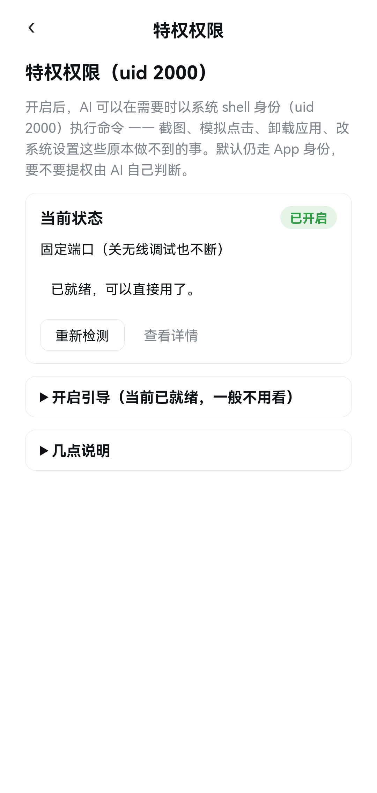
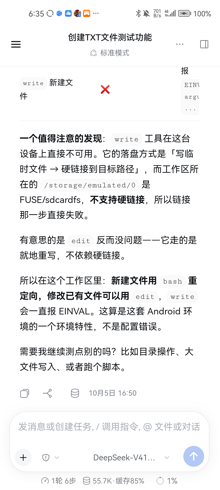
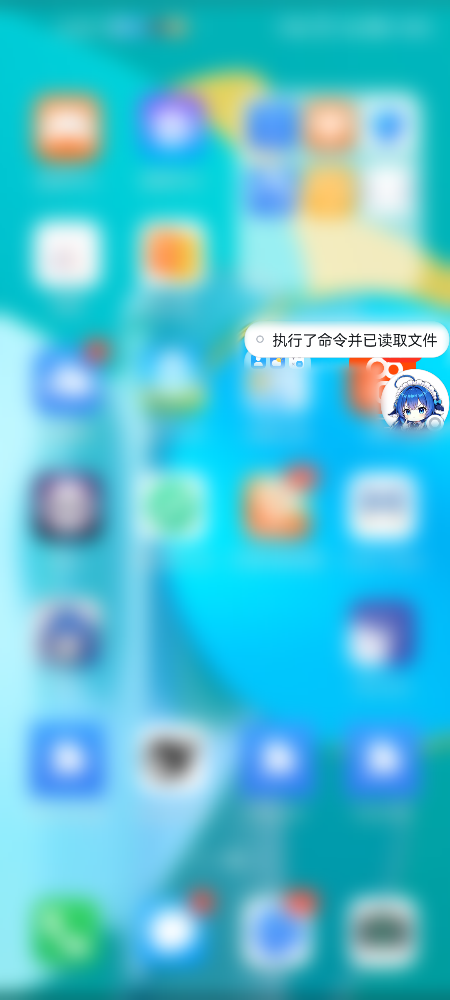
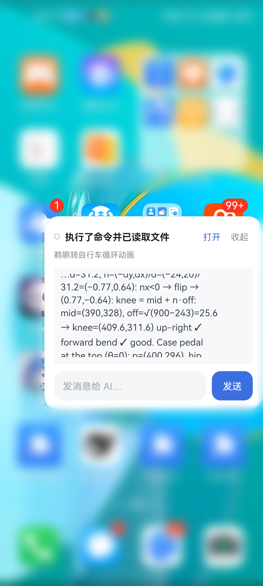
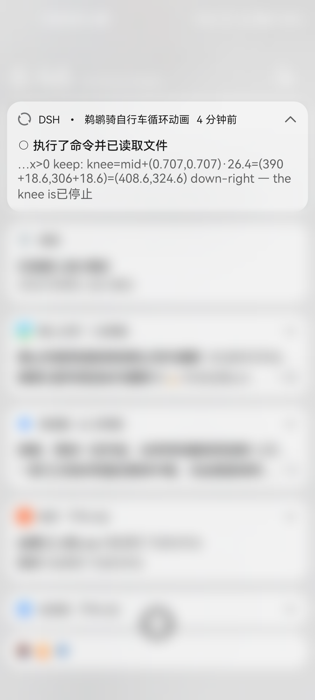
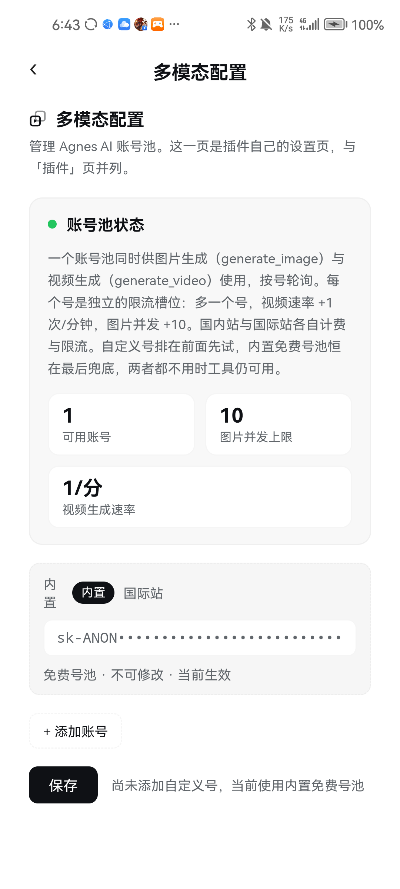
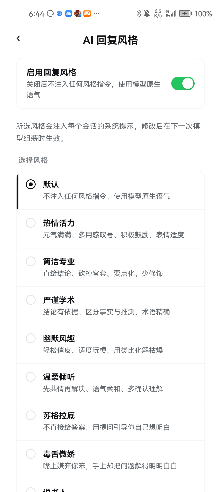

这个 AI，已经在你手机里干活了。

不用连电脑，不用服务器，也不用 root。



不用打开 App，也不用解锁。
正在执行什么、最后一段输出是什么，
下拉通知栏全都在。
前台服务 + 唤醒锁，进程不会被系统回收。

内置免费号池，密钥在 TLS 层换上去，
界面上永远是一串打码的占位符。

你上次说过什么、项目是什么、
偏好怎么写——新会话里它全都记得。
回复风格还能随手切：十一种人设换着用。

评论区置顶拿包 · 你的手机也能开始干活